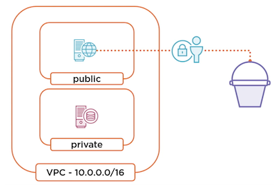
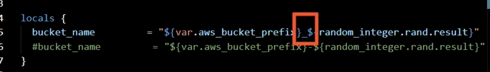
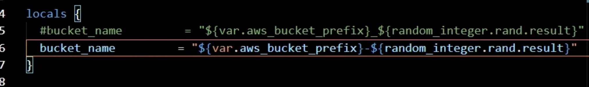
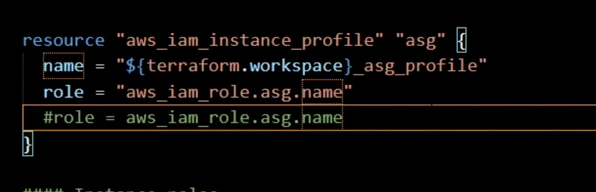
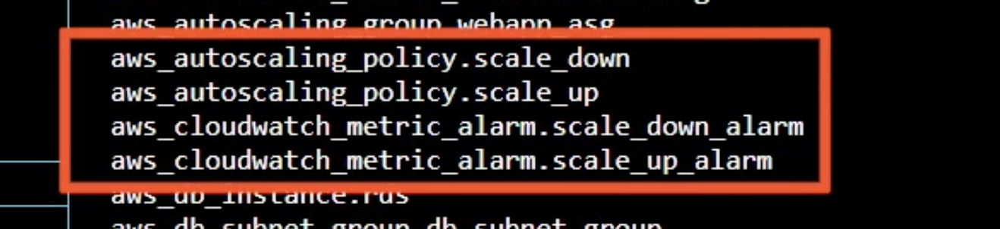
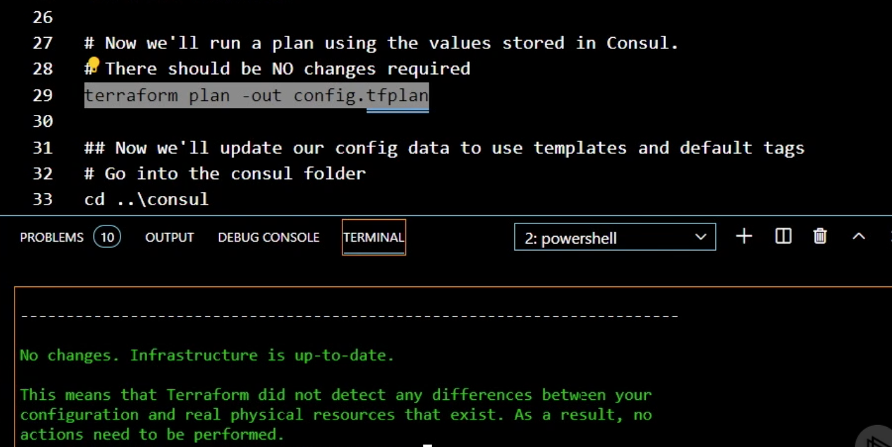
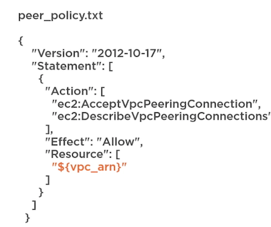
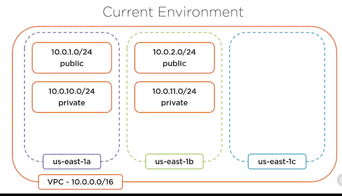
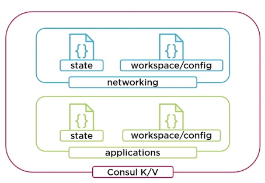

Terraform Advanced(Troubleshooting/Data Sources/Existing Resource)
1 Troubleshooting Terraform
Overview
- Validating configurations
- Enable verbose logging
- Resource taints
- Crash logs
Example: Application Update

Type of Errors in Terraform
Command error / Syntax validation / Provider validation / Deployment error / Panic!
- The first is a command error， so this is simply an error that happens when you're using the command line, and there are definitelv ways to troubleshoot that error.
- There's syntax validation, and this is the process by which Terraform validates the HashiCorp configuration language that you've laid out for your configuration and also some of the logic within that configuration
- Provider validation , when Terraform runs its plan process, the provider has to agree with what's in that configuration. Now, even if the provider agrees, when we get to the apply stage, sometimes deployment errors happen
- Things like resource taints.
- Sometimes Terraform just breaks.
Command Error
- Happens at the command line
- Bad CLI syntax or arguments
- Use the help argument
- Read the docs
Example: test Terraform file
s3.tf
#### S3 buckets
variable "aws_bucket_prefix" {
type = strings
#type = string
default = "jack"
}
resource "random_integer" "rand" {
min = 10000
max = 99999
}
locals {
bucket_name = "${var.aws_bucket_prefix}_${random_integer.rand.result}"
#bucket_name = "${var.aws_bucket_prefix}-${random_integer.rand.result}"
}
resource "aws_s3_bucket" "logs_bucket" {
bucket = local.bucket_name
acl = "private"
force_destroy = true
versioning {
enabled = true
}
}
#### Instance profiles
resource "aws_iam_instance_profile" "asg" {
lifecycle {
create_before_destroy = false
}
name = "${terraform.workspace}_asg_profile_bug"
role = "aws_iam_role.asg.name"
#role = aws_iam_role.asg.name
}
#### Instance roles
resource "aws_iam_role" "asg" {
name = "${terraform.workspace}_asg_role"
path = "/"
assume_role_policy = <<EOF
{
"Version": "2012-10-17",
"Statement": [
{
"Action": "sts:AssumeRole",
"Principal": {
"Service": "ec2.amazonaws.com"
},
"Effect": "Allow",
"Sid": ""
}
]
}
EOF
}
#### S3 policies
resource "aws_iam_role_policy" "asg" {
name = "${terraform.workspace}-jack-primary-rds"
role = aws_iam_role.asg.ids
#role = aws_iam_role.asg.id
policy = <<-EOF
{
"Version": "2012-10-17",
"Statement": [
{
"Action": [
"s3:*"
],
"Effect": "Allow",
"Resource": [
"arn:aws:s3:::${local.bucket_name}",
"arn:aws:s3:::${local.bucket_name}/*"
]
}
]
}
EOF
}
terraform init -h
Try to run terraform init with a bad command switch
terraform init -backend-confi="path=applications/state/primary"
# Report Error. -backend-confi
terraform init -backend-config="path=applications/state/primary"
Initializine provider plugins.
- Checkine for available provider plugins...
- Downloading plugin for provider "aws" (hashicorp/aws) 2.70.0.
Syntax Validation
- Terraform init first
- Checks syntax and logic
- Does not check state
- Manual or automatic
- Automation checks
Validating the syntax of HashiCorp
configuration language, it's actually validating some of the logic in the providers, you're using in your configuration and we'll see how that works, it's simply checking the configuration itself,
The validation run can happen manually or automatically
terraform validate
Error: Invalid type specification
on s3.tf line 3, in variable "aws_bucket_prefix" :
3: type = strings
The keyword "strings" is not a valid type specification.
terraform validate
Error: Unsupported attribute
on s3.tf line 65, in resource "aws_iam_role_policy" "asg"
65: role = aws_iam_role.asg.ids
This object has no argument, nested block, or exported attribute named "ids"
Did you mean "id"?
### Try to run terraform validate
terraform validate
terraform fmt
### Fix issues and run again
terraform validate
Provider Validation and Deployment Errors
- Happens during plan or apply
- Read the error message, then read it again
- Enable logging for more detail
- Use taint to destroy bad resources
terraform workspace select development
Switched to workspace "development"
terraform plan -out dev.tfplan
bucket_name = "${var.aws_bucket_prefix}_${random_integer.rand.result}"
"${var.aws_bucket_prefix}_$**: They cannot include an underscore, and that's why we got an error.


Error: Error creating S3 bucket: InvalidBucketName: The specified bucket is not valid.

Error: Error creating IAM instance profile development asg profile: EntityAlreadyExists: Instance
Profile development_asg_profile already exists.
Verbose Logging
- Exposes Terraform actions
- Enabled through
TF_LOG - Write to file with
TF_LOG_PATH - Trace is most verbose
- Useful in automation
Terraform takes are being exposed at different levels depending on what type of verbose logging you enable.
The way that you enable it is by setting the environment variable TF_LOG to one of a number of different settings. You can also write this logging out to a file by setting the environment variable TF_LOG_PATH, and that has to be the full path to a file, not just a directory.
That's where it will write the data from the logging variable TF_LOG_PATH, and that has to be the full path to a file,
As far as different levels of logging, the most verbose is called trace, and then there's debug, info, warn, and error.
Generally speaking, you want to set it to something like info or warn, because trace and debug are incredibly verbose.
Example
you may want a report of everything that Terraform did at a particular information level. So you can set
TF_LOGas part of your automation process, and setTF_LOG_PATHto store that information in a file.
# Mac or Linux
export TF_LOG=INFO
# PowerShell
$env:TF_LOG="INFO"
### Fix issues and run again
terraform plan -out dev.tfplan
terraform apply "dev.tfplan"
resource "aws_iam_instance_profile" "asg" {
lifecycle {
create_before_destroy = false
}
name = "${terraform.workspace}_asg_profile_bug"
role = "aws_iam_role.asg.name"
#role = aws_iam_role.asg.name
}
Resource Taints
- Marks a resource for recreation
- Terraform will taint automatically
- Identify resources by address
- Resources can be untainted as well
Resource taints are a way to force the recreation of a resource. It basically tells Terraform recreate that resource for me because there's something is wrong with it.
Terraform will taint things automatically if it knows they weren't created successfully. You can also taint something manually and you identify that object by its address within Terraform.
Taint and Untaint Command
# Command syntax
terraform taint [options] address
# Example single resource
terraform taint aws_instance.example
# Example module or collection
terraform taint aws_instance.collection[0]
terraform taint module.asg.aws_instance.example
#Untaint syntax
terraform untaint [options] address
# Example single resource
terraform untaint aws_instance.example
### Taint asg and try to destroy
terraform state list
terraform taint aws_autoscaling_group.webapp_asg
terraform taint aws_autoscaling_policy.scale_down
terraform taint aws_autoscaling_policy.scale_up
terraform taint aws_cloudwatch_metric_alarm.scale_down_alarm
terraform taint aws_cloudwatch_metric_alarm.scale_up_alarm

In our case, the autoscaling policies and CloudWatch metric alarms are both associated with that autoscaling group so those need to be tainted and recreated as well.
Error: Error creating AutoScaling Group: AlreadyExists: AutoScalingGroup by this name already exists
• A group with the name ddt webapp asg-development already exists
#create before destroy
The lifecycle setting, it should now destroy it before it tries to create
Crash Log
- Generated when Terraform panics
- Caused by Terraform or provider
- Similar to trace logging
- Open an issue on GitHub
terraform init -from-module="../toplevel"
SECURITY WARNING: the
"crash.log" file that was created may contain
sensitive information that must be redacted before it is safe to share
on the issue tracker
[1]: https://github.com/hashicorp/terraform/issues
TERRAFORM CRASH
2 Using Data Sources and Templates
Data Sources
- Glue for multiple configurations
- Resources are data sources
- Providers have data sources
-
Alternate data sources
- Templates
- HTTP
- External
- Consul
-
HTTP Data Source
# Example data source
data "http" "my_ip"
{
url = "http: //ifconfig.me"
}
# Using the response
data.http.my_ip.body
Consul Data Source
# Consul data source
data "consul_keys" "networking" {
key {
name = "vpc_cidr_range"
path = "networking/config/vpc/cidr_range"
default = "10.0.0.0/16"
}
}
# Using the response
data.consul_keys.networking.var.vpc_cidr_range
Consul Setup

consul/primary-2.json
{
"cidr_block": "10.0.0.0/16",
"subnet_count": "3"
}
networking/backend.tf
terraform {
backend "consul" {
address = "127.0.0.1:8500"
scheme = "http"
}
}
networking/variables.tf
##################################################################################
# VARIABLES
##################################################################################
variable "region" {
default = "us-east-1"
}
variable "consul_address" {
type = string
description = "Address of Consul server"
default = "127.0.0.1"
}
variable "consul_port" {
type = number
description = "Port Consul server is listening on"
default = "8500"
}
variable "consul_datacenter" {
type = string
description = "Name of the Consul datacenter"
default = "dc1"
}
networking/resources.tf
##################################################################################
# CONFIGURATION - added for Terraform 0.14
##################################################################################
terraform {
required_providers {
aws = {
source = "hashicorp/aws"
version = "~>3.0"
}
consul = {
source = "hashicorp/consul"
version = "~>2.0"
}
}
}
##################################################################################
# PROVIDERS
##################################################################################
provider "aws" {
profile = "deep-dive"
region = var.region
}
provider "consul" {
address = "${var.consul_address}:${var.consul_port}"
datacenter = var.consul_datacenter
}
##################################################################################
# DATA
##################################################################################
data "aws_availability_zones" "available" {}
data "consul_keys" "networking" {
key {
name = "networking"
path = "networking/configuration/jack-primary/net_info"
}
}
##################################################################################
# LOCALS
##################################################################################
locals {
cidr_block = jsondecode(data.consul_keys.networking.var.networking)["cidr_block"]
private_subnets = jsondecode(data.consul_keys.networking.var.networking)["private_subnets"]
public_subnets = jsondecode(data.consul_keys.networking.var.networking)["public_subnets"]
subnet_count = jsondecode(data.consul_keys.networking.var.networking)["subnet_count"]
}
##################################################################################
# RESOURCES
##################################################################################
# NETWORKING #
module "vpc" {
source = "terraform-aws-modules/vpc/aws"
version = "~>2.0"
name = "jack-primary"
cidr = local.cidr_block
azs = slice(data.aws_availability_zones.available.names, 0, local.subnet_count)
private_subnets = local.private_subnets
public_subnets = local.public_subnets
enable_nat_gateway = false
create_database_subnet_group = false
tags = {
Environment = "Production"
Team = "Network"
}
}
Read from consul
locals {
cidr_block = jsondecode(data.consul_keys.networking.var.networking)["cidr_block"]
Let's set the Consul token
# Let's set the Consul token
# Replace SECRETID_VALUE with secret ID
# Linux and MacOS
export CONSUL_HTTP_TOKEN=SECRETID_VALUE
# Windows
$env:CONSUL_HTTP_TOKEN="SECRETID_VALUE"
# Write the configuration data for jack-primary config
consul kv put networking/configuration/jack-primary/net_info @jack-primary.json
consul kv put networking/configuration/jack-primary/common_tags @common-tags.json
## Now go up and into the networking folder
cd ..\networking
## We're going to initialize the Terraform config to use the Consul backend
terraform init -backend-config="path=networking/state/jack-primary"
# Verify our state is loaded
terraform state list

Template as resource
- Manipulation of strings
- Overloaded term
- Quoted strings
- Heredoc syntax
- Provider
- Function
- Interpolation and directives
Simple interpolation
"S{var.prefix}-app"
Conditional directive
"%{ if var.prefix != ""}S(var.prefix}-app%{ else }generic-app%{ endif }"
Collection directive with heredoc
<<EOT
%{ for name in local.names }
${name}-app
%{ endfor }
FOT
Template Syntax In-line
# Template data source
data "template_file" "example" {
count = "2"
template = "$${var1}-$${current_count}"
vars = {
var1 = var.some_string
current_count = count.index
}
Using the template
data.template_file.example.rendered

# Template configuration
data "template_file" "peer-role"{
template = file("peer_policy.txt")
vars = {
vpc_arn = var.vpc_arn
}
}
Or templatefile function
templatefile("peer_policy.txt", { vpc arn = var.vpc arn } )
Example: Networking projects
networking/templates.tf
data "template_file" "public_cidrsubnet" {
count = local.subnet_count
template = "$${cidrsubnet(vpc_cidr,8,current_count)}"
vars = {
vpc_cidr = local.cidr_block
current_count = count.index
}
}
data "template_file" "private_cidrsubnet" {
count = local.subnet_count
template = "$${cidrsubnet(vpc_cidr,8,current_count)}"
vars = {
vpc_cidr = local.cidr_block
current_count = count.index + 10
}
}
What cidrsubnet does, is it takes a CIDR range and then, it adds whatever, number comes in the second argument to that CIDR range.
networking/resource.tf
##################################################################################
# CONFIGURATION - added for Terraform 0.14
##################################################################################
terraform {
required_providers {
aws = {
source = "hashicorp/aws"
version = "~>3.0"
}
consul = {
source = "hashicorp/consul"
version = "~>2.0"
}
}
}
##################################################################################
# PROVIDERS
##################################################################################
provider "aws" {
profile = "deep-dive"
region = var.region
}
provider "consul" {
address = "${var.consul_address}:${var.consul_port}"
datacenter = var.consul_datacenter
}
##################################################################################
# DATA
##################################################################################
data "aws_availability_zones" "available" {}
data "consul_keys" "networking" {
key {
name = "networking"
path = "networking/configuration/jack-primary/net_info"
}
key {
name = "common_tags"
path = "networking/configuration/jack-primary/common_tags"
}
}
##################################################################################
# LOCALS
##################################################################################
locals {
cidr_block = jsondecode(data.consul_keys.networking.var.networking)["cidr_block"]
subnet_count = jsondecode(data.consul_keys.networking.var.networking)["subnet_count"]
common_tags = jsondecode(data.consul_keys.networking.var.common_tags)
}
##################################################################################
# RESOURCES
##################################################################################
# NETWORKING #
module "vpc" {
source = "terraform-aws-modules/vpc/aws"
version = "~>2.0"
name = "jack-primary"
cidr = local.cidr_block
azs = slice(data.aws_availability_zones.available.names, 0, local.subnet_count)
private_subnets = data.template_file.private_cidrsubnet.*.rendered
public_subnets = data.template_file.public_cidrsubnet.*.rendered
enable_nat_gateway = false
create_database_subnet_group = false
tags = local.common_tags
}
private_subnets = data.template_file.private_cidrsubnet.*.rendered
public_subnets = data.template_file.public_cidrsubnet.*.rendered
Run the example
## We're going to initialize the Terraform config to use the Consul backend
terraform init -backend-config="path=networking/state/jack-primary"
# Verify our state is loaded
terraform state list
# Now we'll run a plan using the values stored in Consul.
# All the tags should be updated
terraform plan -out config.tfplan
terraform apply config.tfplan
3 Working with Existing Resources

##################################################################################
# CONFIGURATION - added for Terraform 0.14
##################################################################################
terraform {
required_providers {
aws = {
source = "hashicorp/aws"
version = "~>3.0"
}
}
}
##################################################################################
# PROVIDERS
##################################################################################
provider "aws" {
profile = "deep-dive"
region = var.region
}
##################################################################################
# DATA
##################################################################################
data "aws_availability_zones" "available" {}
##################################################################################
# RESOURCES
##################################################################################
# NETWORKING #
module "vpc" {
source = "terraform-aws-modules/vpc/aws"
version = "~>2.0"
name = "jack-primary"
cidr = var.cidr_block
azs = slice(data.aws_availability_zones.available.names, 0, var.subnet_count)
private_subnets = var.private_subnets
public_subnets = var.public_subnets
enable_nat_gateway = false
create_database_subnet_group = false
tags = {
Environment = "Production"
Team = "Network"
}
}
Using Workspaces and Collaboration
- Common configuration
- Individual state data instance
- Multiple environments
- terraform.workspace
Consul Setup

State as Data Source
data "terraform_remote state" "networking"
{
backend = "consul"
config = {
path = var.network_path
address = var.consul_address
scheme = var. consul_scheme
}
}
The Import Command
# Command syntax
terraform import [options] ADDR ID
# ADDR - configuration resource identifier
# EX. - module.vpc.aws_subnet.public[2]
# ID - provider specific resource identifier
# EX.- subnet-ad536afg9
# Importing a subnet into a configuration
terraform import -var-file="terraform.tfvars" \
module.vpc.aws_subnet.public[2] subnet-ad536afg9
datasources.tf
##################################################################################
# DATA SOURCES
##################################################################################
data "consul_keys" "applications" {
key {
name = "applications"
path = terraform.workspace == "default" ? "applications/configuration/globo-primary/app_info" : "applications/configuration/globo-primary/${terraform.workspace}/app_info"
}
key {
name = "common_tags"
path = "applications/configuration/globo-primary/common_tags"
}
}
data "terraform_remote_state" "networking" {
backend = "consul"
config = {
address = "127.0.0.1:8500"
scheme = "http"
path = terraform.workspace == "default" ? "networking/state/globo-primary" : "networking/state/globo-primary-env:${terraform.workspace}"
}
}
data "aws_ami" "aws_linux" {
most_recent = true
owners = ["amazon"]
filter {
name = "name"
values = ["amzn-ami-hvm-20*"]
}
filter {
name = "architecture"
values = ["x86_64"]
}
filter {
name = "virtualization-type"
values = ["hvm"]
}
filter {
name = "root-device-type"
values = ["ebs"]
}
}
resources.tf
#Based on the work from https://github.com/arbabnazar/terraform-ansible-aws-vpc-ha-wordpress
##################################################################################
# CONFIGURATION - added for Terraform 0.14
##################################################################################
terraform {
required_providers {
aws = {
source = "hashicorp/aws"
version = "~>3.0"
}
consul = {
source = "hashicorp/consul"
version = "~>2.0"
}
}
}
##################################################################################
# PROVIDERS
##################################################################################
provider "aws" {
profile = "deep-dive"
region = var.region
}
provider "consul" {
address = "${var.consul_address}:${var.consul_port}"
datacenter = var.consul_datacenter
}
##################################################################################
# LOCALS
##################################################################################
locals {
asg_instance_size = jsondecode(data.consul_keys.applications.var.applications)["asg_instance_size"]
asg_max_size = jsondecode(data.consul_keys.applications.var.applications)["asg_max_size"]
asg_min_size = jsondecode(data.consul_keys.applications.var.applications)["asg_min_size"]
rds_storage_size = jsondecode(data.consul_keys.applications.var.applications)["rds_storage_size"]
rds_engine = jsondecode(data.consul_keys.applications.var.applications)["rds_engine"]
rds_version = jsondecode(data.consul_keys.applications.var.applications)["rds_version"]
rds_instance_size = jsondecode(data.consul_keys.applications.var.applications)["rds_instance_size"]
rds_multi_az = jsondecode(data.consul_keys.applications.var.applications)["rds_multi_az"]
rds_db_name = jsondecode(data.consul_keys.applications.var.applications)["rds_db_name"]
common_tags = merge(jsondecode(data.consul_keys.applications.var.common_tags),
{
Environment = terraform.workspace
}
)
}
##################################################################################
# RESOURCES
##################################################################################
resource "aws_launch_configuration" "webapp_lc" {
lifecycle {
create_before_destroy = true
}
name_prefix = "${terraform.workspace}-ddt-lc-"
image_id = data.aws_ami.aws_linux.id
instance_type = local.asg_instance_size
security_groups = [
aws_security_group.webapp_http_inbound_sg.id,
aws_security_group.webapp_ssh_inbound_sg.id,
aws_security_group.webapp_outbound_sg.id,
]
user_data = file("./templates/userdata.sh")
associate_public_ip_address = true
}
resource "aws_elb" "webapp_elb" {
name = "ddt-webapp-elb-${terraform.workspace}"
subnets = data.terraform_remote_state.networking.outputs.public_subnets
listener {
instance_port = 80
instance_protocol = "http"
lb_port = 80
lb_protocol = "http"
}
health_check {
healthy_threshold = 2
unhealthy_threshold = 2
timeout = 3
target = "HTTP:80/"
interval = 10
}
security_groups = [aws_security_group.webapp_http_inbound_sg.id]
tags = local.common_tags
}
resource "aws_autoscaling_group" "webapp_asg" {
lifecycle {
create_before_destroy = true
}
vpc_zone_identifier = data.terraform_remote_state.networking.outputs.public_subnets
name = "ddt_webapp_asg-${terraform.workspace}"
max_size = local.asg_max_size
min_size = local.asg_min_size
wait_for_elb_capacity = local.asg_min_size
force_delete = true
launch_configuration = aws_launch_configuration.webapp_lc.id
load_balancers = [aws_elb.webapp_elb.name]
dynamic "tag" {
for_each = local.common_tags
content {
key = tag.key
value = tag.value
propagate_at_launch = true
}
}
}
#
# Scale Up Policy and Alarm
#
resource "aws_autoscaling_policy" "scale_up" {
name = "ddt_asg_scale_up-${terraform.workspace}"
scaling_adjustment = 2
adjustment_type = "ChangeInCapacity"
cooldown = 300
autoscaling_group_name = aws_autoscaling_group.webapp_asg.name
}
resource "aws_cloudwatch_metric_alarm" "scale_up_alarm" {
alarm_name = "ddt-high-asg-cpu-${terraform.workspace}"
comparison_operator = "GreaterThanThreshold"
evaluation_periods = "2"
metric_name = "CPUUtilization"
namespace = "AWS/EC2"
period = "120"
statistic = "Average"
threshold = "80"
insufficient_data_actions = []
dimensions = {
AutoScalingGroupName = aws_autoscaling_group.webapp_asg.name
}
alarm_description = "EC2 CPU Utilization"
alarm_actions = [aws_autoscaling_policy.scale_up.arn]
}
#
# Scale Down Policy and Alarm
#
resource "aws_autoscaling_policy" "scale_down" {
name = "ddt_asg_scale_down-${terraform.workspace}"
scaling_adjustment = -1
adjustment_type = "ChangeInCapacity"
cooldown = 600
autoscaling_group_name = aws_autoscaling_group.webapp_asg.name
}
resource "aws_cloudwatch_metric_alarm" "scale_down_alarm" {
alarm_name = "ddt-low-asg-cpu-${terraform.workspace}"
comparison_operator = "LessThanThreshold"
evaluation_periods = "5"
metric_name = "CPUUtilization"
namespace = "AWS/EC2"
period = "120"
statistic = "Average"
threshold = "30"
insufficient_data_actions = []
dimensions = {
AutoScalingGroupName = aws_autoscaling_group.webapp_asg.name
}
alarm_description = "EC2 CPU Utilization"
alarm_actions = [aws_autoscaling_policy.scale_down.arn]
}
## Database Config
resource "aws_db_subnet_group" "db_subnet_group" {
name = "${terraform.workspace}-ddt-rds-subnet-group"
subnet_ids = data.terraform_remote_state.networking.outputs.private_subnets
}
resource "aws_db_instance" "rds" {
identifier = "${terraform.workspace}-ddt-rds"
allocated_storage = local.rds_storage_size
engine = local.rds_engine
engine_version = local.rds_version
instance_class = local.rds_instance_size
multi_az = local.rds_multi_az
name = "${terraform.workspace}${local.rds_db_name}"
username = var.rds_username
password = var.rds_password
db_subnet_group_name = aws_db_subnet_group.db_subnet_group.id
vpc_security_group_ids = [aws_security_group.rds_sg.id]
skip_final_snapshot = true
tags = local.common_tags
}
security_groups.tf
##################################################################################
# RESOURCES
##################################################################################
resource "aws_security_group" "webapp_http_inbound_sg" {
name = "demo_webapp_http_inbound"
description = "Allow HTTP from Anywhere"
ingress {
from_port = 80
to_port = 80
protocol = "tcp"
cidr_blocks = ["0.0.0.0/0"]
}
egress {
from_port = 0
to_port = 0
protocol = "-1"
cidr_blocks = ["0.0.0.0/0"]
}
vpc_id = data.terraform_remote_state.networking.outputs.vpc_id
tags = {
Name = "terraform_demo_webapp_http_inbound"
}
}
resource "aws_security_group" "webapp_ssh_inbound_sg" {
name = "demo_webapp_ssh_inbound"
description = "Allow SSH from certain ranges"
ingress {
from_port = 22
to_port = 22
protocol = "tcp"
cidr_blocks = [var.ip_range]
}
vpc_id = data.terraform_remote_state.networking.outputs.vpc_id
tags = merge(local.common_tags, {
Name = "terraform_demo_webapp_ssh_inbound"
})
}
resource "aws_security_group" "webapp_outbound_sg" {
name = "demo_webapp_outbound"
description = "Allow outbound connections"
egress {
from_port = 0
to_port = 0
protocol = "-1"
cidr_blocks = ["0.0.0.0/0"]
}
vpc_id = data.terraform_remote_state.networking.outputs.vpc_id
tags = merge(local.common_tags, {
Name = "terraform_demo_webapp_outbound"
})
}
resource "aws_security_group" "rds_sg" {
name = "demo_rds_inbound"
description = "Allow inbound from web tier"
vpc_id = data.terraform_remote_state.networking.outputs.vpc_id
tags = {
Name = "demo_rds_inbound"
}
// allows traffic from the SG itself
ingress {
from_port = 0
to_port = 0
protocol = "-1"
self = true
}
// allow traffic for TCP 3306
ingress {
from_port = 3306
to_port = 3306
protocol = "tcp"
security_groups = [aws_security_group.webapp_http_inbound_sg.id]
}
// outbound internet access
egress {
from_port = 0
to_port = 0
protocol = "-1"
cidr_blocks = ["0.0.0.0/0"]
}
}